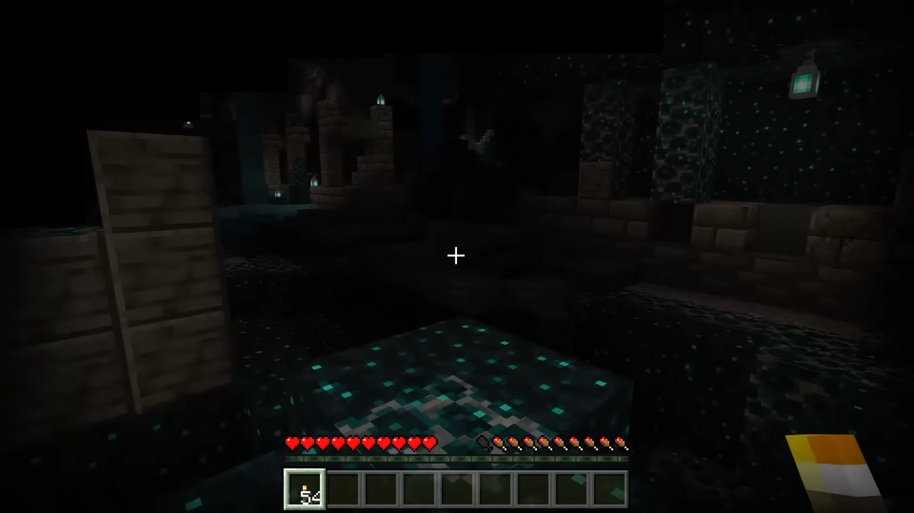

Multiplayer
Servers
Featured networks plus your own quick-join. Hit Join to fill it in and launch.
Custom server
Paste any Java server IP — Cinder auto-joins it on launch.
Builds
Versions
Pick which build to install or launch
Identity
Profiles
Sign in online, or add an offline profile. Click a profile to make it active.
Offline profile
Play with a local username, no login required. Works on offline-mode / cracked servers and any server you host yourself — premium online-mode servers (Hypixel & co.) will always reject offline names with “Invalid session”. That check happens on Mojang’s servers, so no launcher can bypass it.
Tip: click a suggestion to fill it in, then hit Add. Names must be 3–16 chars: A–Z, 0–9, _.
Microsoft account
Sign in with your real Microsoft account to play online.
Not signed in
Workshop
Mods
Search Modrinth, install in one click, or drop in your own .jars
Mod loader
Mods only run with a loader installed. Install once per Minecraft version, then just hit Launch.
No loader selected
Forge / NeoForge mods are detected and flagged, but auto-install isn't supported yet — install those loaders manually into the game dir.
Browse Modrinth
Official source. Pick the loader matching your setup — files install straight into the mods folder.
Wardrobe
Skins
Preview any username in 3D, check your active profile, or drop in your own PNG.
3D preview
Auto-spins with a walking pose. Zoom and pan stay off so it never flies away.
Open this tab to start the 3D viewer…
Try a name
Type any Java username — we fetch its live skin through the launcher backend.
Tip: upload must be a classic 64x64 PNG. Save downloads the current canvas frame.
Singleplayer
Worlds
Back up, restore, or delete your singleplayer saves. Backups are zip files in the backups folder.
Tuning
Settings
Game directory, Java, memory, and window size
Appearance & logs
Recolor the whole launcher in one click, calm the animations down, or trim noisy debug lines from the log view.
Performance & updates
Tune garbage collection for smoother frames, then decide if Cinder checks for updates and keeps the snowfall falling. Saved with the rest of Settings.
Low-latency ZGC needs Java 21+ — on older Java the flags are ignored by the runtime.
Discord profile status
Automatic — your profile shows “Playing Cinder” + logo (+ Download button), in game “Playing Minecraft 1.21 as …”. No setup, no bot, no linking. Just keep the Discord desktop app open.
Says “Minecraft” instead of Cinder? Hit Test until Connected ✓. Still losing? Discord → Settings → Registered Games → remove the Minecraft entry → restart Discord → Test again. (details)
Checking Discord…
Terminal
Logs
Launcher and game output